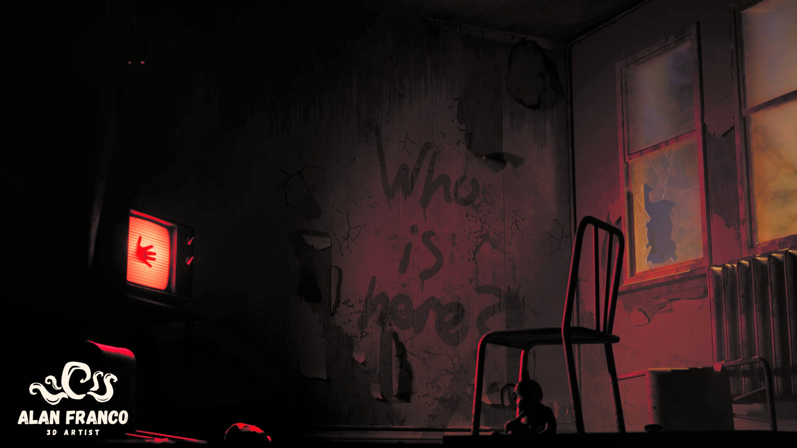
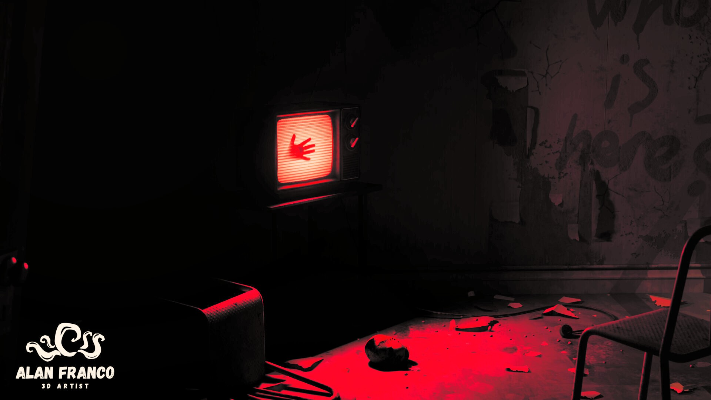
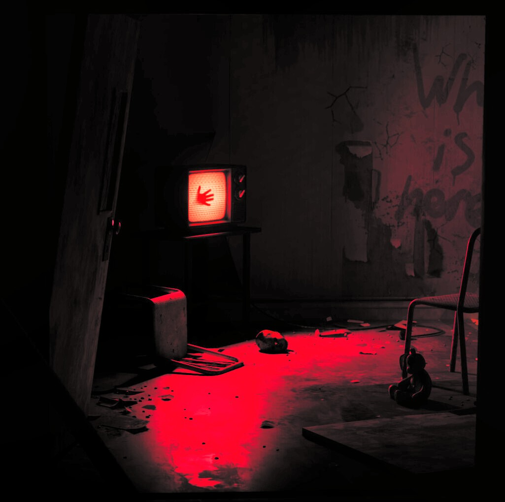

Who Is Here?
A horror environment built around light and atmosphere, inspired by Alan Wake.
- Type
- Lighting practice
- Role
- Environment art and lighting
- Tools
- Blender, Substance Painter, Unreal Engine
- Year
- 2025

Overview
A horror environment inspired by Alan Wake, made as a lighting practice. I modeled the assets in Blender, textured them in Substance Painter, and assembled, lit and rendered the scene in Unreal Engine.
The scene is an abandoned room with peeling walls and a broken window, where an old TV glowing red, with a handprint on its screen, becomes the focal point. The question that gives the project its name is written on the wall.
Lately I've been drawn to horror environments. Crafting this eerie scene was both challenging and rewarding, and the focus was on using light, shadow and composition to build tension.
A fun fact: I'm actually quite fearful of horror, and I only enjoy the atmospheres that are created.
What I did
- Modeled the room and its props in Blender.
- Textured the assets in Substance Painter, including the worn, peeling walls.
- Assembled the scene in Unreal Engine and designed the lighting around a red-dominant palette, with a warm glow from the window as a secondary light.
- Dressed the room with storytelling props: the old TV, a metal chair, a radiator, a small toy and debris on the floor.
- Used light, shadow and composition to build tension, taking cues from the atmosphere of Alan Wake.
Gallery

